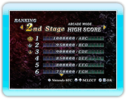
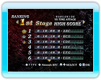

15 |
RANKING MODE |
 |
|
RANKING MODE ti permette di vedere i punteggi ottenuti giocando.
● I risultati totali dei punteggi per la sfida in STORY MODE ● I risultati migliori per ogni stage di ARCADE MODE ● I risultati migliori per ogni stage di VERSUS MODE
(Accessibile premendo
● Il risultato migliore raggiunto dal giocatore in ogni stage in ARCADE MODE e i punteggi più vicini di altri 30 giocatori.
● Il risultato migliore raggiunto dal giocatore in ogni stage in VERSUS MODE e i punteggi più vicini di altri 30 giocatori. Mentre vengono visualizzati i punteggi del VERSUS MODE, puoi alternare WORLD WIDE, REGIONAL e FRIEND premendo * In VERSUS MODE, puoi solo registrarti nella classifica Nintendo Wi-Fi Connection quando raggiungi il punteggio migliore. * La registrazione alla classifica Nintendo Wi-Fi Connection non è obbligatoria.

● Sito Internet del portale WiiWare di Hudson
● Politica gestionale |
 |
 |
 |